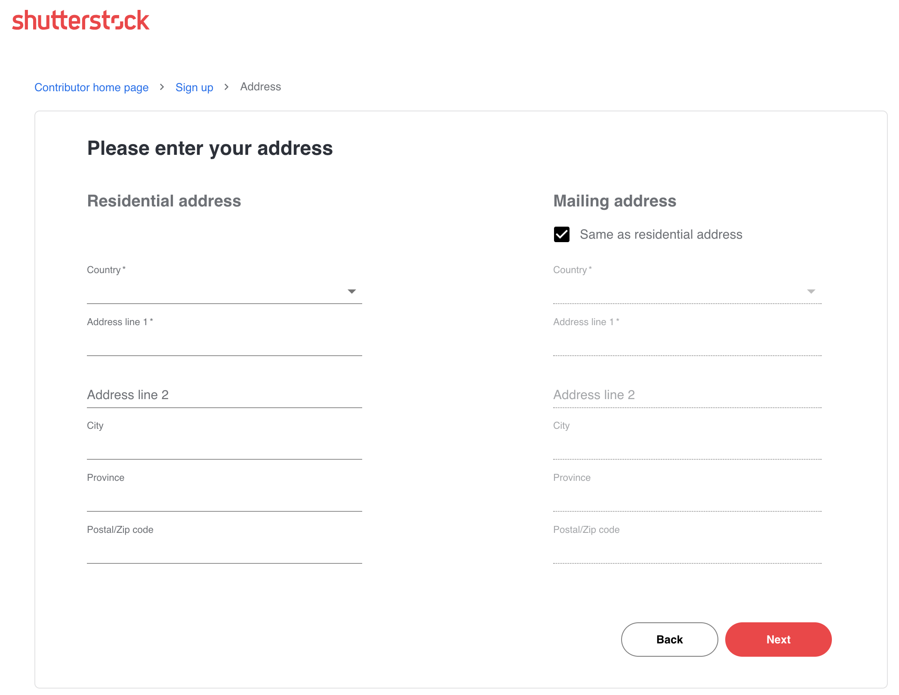

FAQ
Frequently Ask Question
Signing
UP
Menjadi kontributor di Shutterstock itu mudah! Siapa pun yang berusia di atas 18 tahun dapat mendaftar dalam beberapa langkah mudah. Anda akan siap untuk mulai mengirimkan konten dengan cepat.
Untuk mendaftar akun kontributor Shutterstock, daftar di submit.shutterstock.com. Situs ini dirancang khusus untuk kontributor kami. Pelanggan kami harus menggunakan shutterstock.com.
Untuk mendaftar, Anda harus memberikan beberapa informasi pribadi dasar dan memverifikasi email Anda. Anda juga dapat membuat akun penelusuran gratis di situs pelanggan kami, tetapi Anda hanya dapat mengirimkan konten melalui akun kontributor Anda di submit.shutterstock.com.
STEP 1: Berikan Informasi Dasar
Pada halaman pertama, masukkan nama lengkap, nama tampilan, dan alamat email Anda. Nama lengkap Anda harus sesuai dengan nama resmi atau nama bisnis Anda jika Anda mendaftar sebagai bisnis. Nama tampilan Anda adalah nama yang akan ditampilkan secara publik. Kami akan menghubungi Anda melalui alamat email yang terkait dengan akun Anda.
Saat Anda menekan "Berikutnya," kami akan mengirimkan pesan untuk memverifikasi bahwa alamat email yang Anda berikan valid. Ikuti instruksi dalam email tersebut.

LANGKAH 2: Tambahkan alamat Anda
Sekarang Anda siap menjelajahi dasbor akun Anda dan mulai mengunggah konten Anda!
Anda masih harus memasukkan alamat tempat tinggal dan alamat surat jika berbeda. Informasi alamat harus dimasukkan dalam bahasa Inggris saja (huruf beraksen atau karakter khusus tidak diterima

Untuk menjadi kontributor aktif Shutterstock, Anda perlu mengirimkan beberapa foto, jpeg, ilustrasi eps, atau beberapa klip video untuk kiriman pertama Anda yang memenuhi kriteria kiriman kami. Konten yang Anda kirimkan akan ditinjau oleh tim peninjau ahli kami. Ketika konten pertama Anda disetujui, akun Anda akan aktif sepenuhnya, dan Anda dapat mengirimkan file apa pun tanpa batasan. Harap diingat bahwa Anda hanya dapat mengunggah karya Anda sendiri atau konten yang Anda miliki hak ciptanya.
Shutterstock adalah platform kreatif yang terus berkembang di mana para seniman profesional dan penghobi dapat menyumbangkan karya mereka untuk dilisensikan oleh jaringan global kami yang luas. Jika Anda ingin menjual konten Anda di Shutterstock, yang perlu Anda lakukan untuk memulai adalah mendaftar akun kontributor gratis dan dalam hitungan menit Anda dapat mulai mengirimkan karya Anda!
- Anda harus berusia minimal 18 tahun untuk mengirimkan karya Anda ke Shutterstock.
- Karya Anda harus orisinal dan Anda harus menjadi pemilik hak cipta dari karya yang Anda kirimkan.
- Submit.shutterstock.com adalah situs untuk seniman yang berkontribusi dan shutterstock.com adalah untuk pelanggan yang melisensikan karya Anda.
- Karya yang menampilkan model atau properti pribadi dan dimaksudkan untuk lisensi komersial harus disertai dengan rilis.
- Ada sejumlah batasan tentang apa yang bisa diterima oleh Shutterstock, terutama untuk lisensi komersial - Anda bisa mempelajarinya di sini.
Setelah Anda mendaftarkan akun kontributor Anda di submit.shutterstock.com, Anda siap untuk mulai mengirimkan karya Anda!
Kirimkan karya Anda
Shutterstock menerima berbagai macam konten yang dapat diunduh di bawah beberapa lisensi dan digunakan untuk tujuan komersial atau editorial. Persyaratan teknis dan pengiriman sedikit berbeda di antara berbagai jenis konten, jadi klik masing-masing di bawah ini untuk mendapatkan detailnya:
Photos
Illustrations
Vectors
Video
Music
Setelah Anda mengirimkan karya Anda untuk ditinjau, tim peninjau konten kami akan mengevaluasi kiriman Anda terhadap sejumlah persyaratan teknis dan kepatuhan. Anda dapat membaca lebih lanjut tentang proses peninjauan di sini. Biasanya diperlukan waktu 1-2 hari untuk meninjau kiriman Anda dan Anda akan melihat hasilnya di halaman Kirim di akun Anda.
Jika karya Anda tidak disetujui, Anda dapat mempelajari lebih lanjut tentang alasan di balik penolakan tersebut dengan membaca salah satu artikel dukungan peninjauan kami - di sana Anda juga akan menemukan kiat-kiat berguna untuk menghindari penolakan di masa mendatang. Jika Anda dapat memperbaiki masalah yang mendasarinya, Anda dapat mengirim ulang karya Anda untuk ditinjau kembali!
Kiriman yang telah diterima, akan ditampilkan di Manajer Katalog dan akan dipublikasikan dalam portofolio Anda dalam waktu 72 jam setelah disetujui. Setelah konten Anda ditayangkan di situs, pelanggan dapat menemukan dan mengunduh karya Anda untuk proyek kreatif mereka.
Dapatkan uang dari unduhan
Setiap kali pelanggan mengunduh karya Anda, mereka membeli lisensi. Sebagai artis yang berkontribusi, Anda akan mendapatkan persentase dari harga yang mereka bayarkan untuk lisensi tersebut. Berapa banyak yang Anda peroleh per unduhan tergantung pada beberapa faktor; jenis paket yang digunakan untuk pembelian, jenis lisensi yang disertakan dalam paket tersebut, dan tingkat penghasilan Anda sebagai kontributor pada saat pengunduhan.
Dapatkan bayaran
Setelah Anda memperoleh setidaknya $25 dari melisensikan karya Anda di Shutterstock, Anda siap untuk mengumpulkan penghasilan Anda! Untuk menerima pembayaran, Anda harus memiliki formulir pajak yang sudah diisi dan memilih penyedia pembayaran elektronik - pilih dari PayPal, Skrill, atau Payoneer. Pastikan untuk memeriksa dengan penyedia pembayaran Anda apakah ada batasan atau persyaratan khusus untuk menerima pembayaran, karena hal tersebut dapat bervariasi di berbagai negara dan wilayah. Pembayaran dikeluarkan setiap bulan dan dihitung pada tanggal 1 setiap bulannya
Beberapa tips untuk sukses
Tidak ada satu formula rahasia yang bisa diikuti oleh seniman mana pun untuk menciptakan portofolio yang sukses, tetapi dengan mengikuti panduan berikut ini, Anda bisa memulai di jalan yang benar:
- Unggah secara teratur. Roma tidak dibangun dalam sehari - dibutuhkan pengiriman secara teratur untuk membangun portofolio yang cukup besar di Shutterstock. Anda tidak perlu memiliki ratusan ribu gambar atau video, tetapi semakin banyak yang Anda kirimkan secara teratur, semakin terlihat konten Anda dalam hasil pencarian.
- Perhatikan metadata. Judul dan kata kunci memainkan peran penting dalam penemuan konten Anda. Lihat artikel ini untuk mendapatkan kiat dan praktik terbaik.
- Kurasi portofolio Anda. Permudah pelanggan untuk menemukan karya Anda dengan mengelompokkan konten Anda ke dalam set berdasarkan subjek, konsep, atau tren kreatif.
- Ketahui apa yang sedang diminati. Ikuti tren kreatif saat ini dan jelajahi Shot List - rangkuman konsep dan tema bulanan yang diminta oleh pelanggan kami. Blog kontributor juga merupakan sumber informasi dan inspirasi yang bagus.
Jika Anda baru mengenal Shutterstock dan ingin mendaftar sebagai bisnis, masukkan nama bisnis Anda yang sah secara hukum di bidang Nama Lengkap, bukan nama lengkap Anda
Jika Anda sudah memiliki akun Shutterstock individu dan ingin mentransfernya ke akun bisnis, Anda dapat mempelajari lebih lanjut tentang prosesnya di sini. Anda juga dapat memiliki akun individu dan akun bisnis jika Anda tidak berbagi konten di antara keduanya. Dalam kedua skenario tersebut, silakan hubungi kami untuk bantuan selama langkah terakhir.
Baik saat Anda mendaftar untuk pertama kalinya sebagai bisnis, mentransfer akun perorangan ke akun bisnis, atau membuat akun bisnis di samping akun perorangan, Anda harus menyerahkan formulir pajak yang telah diisi untuk menerima pembayaran.
Informasi berikut ini melengkapi Ketentuan Layanan Pengirim Shutterstock. Sebagai kontributor Shutterstock, Anda diharuskan untuk mematuhi kebijakan yang diuraikan di bawah ini.
Pendaftaran Akun dan Formulir yang Dibutuhkan
- Anda harus berusia 18 tahun untuk membuat akun Shutterstock
- Anda tidak boleh berbagi akun dengan orang lain, dan/atau berbagi konten dengan kontributor Shutterstock lainnya tanpa persetujuan sebelumnya dari Shutterstock.
- Nama "Lakukan pembayaran ke" di akun Anda haruslah nama lengkap Anda yang tercantum di formulir pajak Anda; ini adalah nama yang akan menerima pembayaran royalti. Untuk akun bisnis, kolom ini akan berisi nama bisnis.
- Untuk menjadikan akun Shutterstock Anda sebagai akun bisnis, Anda harus memberi kami dokumentasi yang diwajibkan oleh negara atau negara bagian Anda yang mengindikasikan bahwa Anda adalah pemilik utama bisnis tersebut. Hubungi tim dukungan kami untuk mendapatkan bantuan.
- Anda tidak boleh membuka akun Shutterstock kedua tanpa izin dari Shutterstock.
- Anda tidak boleh berbagi akun layanan pemrosesan pembayaran online yang sama (seperti Payoneer, Paypal, atau Skrill) dengan kontributor Shutterstock lainnya.
- anda harus menyerahkan formulir pajak yang berlaku untuk menerima pembayaran royalti yang masih harus dibayar di akun Anda. Shutterstock tidak akan mengeluarkan pembayaran ke akun tanpa formulir pajak yang disetujui.
Regulasi Akun
Jika kami melihat masalah berulang terkait pengiriman konten atau aktivitas akun, Anda mungkin akan menerima peringatan. Beberapa peringatan dapat mengakibatkan penangguhan atau penghentian akun. Beberapa alasan untuk menerima peringatan meliputi:
Aktivitas Akun
- Kegagalan untuk mengikuti panduan yang diuraikan dalam Pendaftaran Akun, di atas
- Berbagi akun Payoneer, Paypal, atau Skrill dengan kontributor Shutterstock lainnya
Pengajuan Konten
Harap diperhatikan: Mengirimkan konten yang bukan hak cipta Anda atau mengirimkan konten yang melanggar hak cipta artis lain dengan sengaja akan mengakibatkan penghentian akun secara langsung.
- Mengirimkan konten yang melanggar hak orang lain. Termasuk menyalin secara langsung atau inspirasi yang berlebihan dari karya yang bukan hak cipta Anda.
- Berulang kali mengirimkan ulang konten yang ditolak tanpa memperbaiki masalah hukum/kepatuhan, kualitas teknis, atau metadata yang telah diidentifikasi.
- Kesalahan yang sering terjadi sehubungan dengan tag pengiriman yang diwajibkan seperti penunjukan Konten Dewasa yang dijelaskan di sini.
- Judul dan/atau Kata Kunci yang diulang secara konsisten - mengulang kata yang sama dalam judul dan/atau menggunakan kata kunci yang tidak relevan atau berulang-ulang
- Pengiriman Konten dan/atau Metadata yang Tidak Menyenangkan dan/atau Metadata yang berulang-ulang secara konsisten, termasuk judul atau kata kunci yang tidak pantas (misalnya, menggunakan istilah seksual untuk mendeskripsikan anak di bawah umur)
- Re-adding keywords that were previously removed by an administrator, adding restricted keywords after content approval, or modifying a caption that was previously edited by an administrato
Kebijakan Shutterstock biasanya membatasi penggunaan beberapa akun. Namun, akun kedua diperbolehkan jika didaftarkan atas nama badan hukum yang berbeda dengan materi berhak ciptanya sendiri. Jika Anda memiliki perusahaan, Anda dapat memiliki satu akun pribadi atas nama Anda dan satu akun bisnis atas nama perusahaan. Sangat penting untuk tidak pernah membagikan konten di antara kedua akun tersebut.
Shutterstock dan PremiumBeat bermitra untuk menyediakan platform terbaik untuk membagikan musik bebas royalti Anda kepada dunia. Berikut ini yang perlu Anda ketahui sebelum bergabung dengan komunitas artis dan produser yang berkontribusi.
Apa perbedaan antara Shutterstock Music dan koleksi PremiumBeat?
Kedua koleksi kami dikurasi dengan cermat oleh para ahli produksi kami. Jika Anda bergabung sebagai komposer, para ahli konten kami akan menentukan koleksi mana yang paling sesuai dengan karya Anda, berdasarkan kebutuhan setiap koleksi pada saat itu.
Kami mendorong Anda untuk menelusuri kedua koleksi kami, untuk mendapatkan gambaran yang kuat tentang lagu-lagu kami yang populer dan berkualitas tinggi, serta suara dan genre yang sesuai dengan pelanggan kami.
Ketika Anda mendaftar dengan Shutterstock, Anda akan diminta dua nama: Nama Lengkap dan Nama Tampilan.
Nama Lengkap Anda haruslah nama resmi Anda seperti yang tertera pada dokumen identifikasi Anda. Nama ini tidak akan ditampilkan secara publik di situs web kami dan merupakan nama yang akan digunakan untuk melakukan pembayaran royalti, yang juga dikenal sebagai nama "Lakukan pembayaran ke", jadi Anda tidak boleh menggunakan nama panggilan. Pembayaran dan pendaftaran juga dapat dilakukan atas nama bisnis. Pelajari lebih lanjut tentang mendaftar sebagai bisnis di sini: Dapatkah saya mendaftar akun kontributor sebagai bisnis?
Nama Tampilan Anda akan ditampilkan secara publik di samping konten Anda di www.shutterstock.com dan akan digunakan sebagai Nama Hak Cipta Anda oleh pelanggan saat memberikan kredit foto. Anda dapat menggunakan nama artis, nama panggilan, atau nama samaran sebagai nama tampilan Anda dan dapat diubah di bagian Informasi Publik setelah akun Anda disetujui.
Jika Anda melihat pesan "Akun Anda saat ini dalam masa tunggu 90 hari. Anda akan memenuhi syarat untuk menerima pembayaran setelah xx/xx/xxxx" pada Ringkasan Penghasilan Anda, akun kontributor Shutterstock Anda telah ditandai oleh sistem kami sebagai akun yang berasal dari area dengan tingkat penipuan yang tinggi. Karena alasan ini, kami harus menerapkan pembatasan tambahan pada pedoman pembayaran akun Anda.
Anda bisa mengirimkan konten dan langsung menghasilkan penjualan, dan kami mendorong Anda untuk melakukannya! Anda akan memenuhi syarat untuk menerima pembayaran 90 hari setelah gambar atau klip pertama Anda disetujui. Harap diperhatikan bahwa untuk menerima pembayaran, Anda harus mencapai ambang batas pembayaran minimum seperti yang diuraikan dalam artikel ini.
Kami menghargai kesabaran dan pengertian Anda. Perlu diketahui bahwa masa tunggu ini dikelola oleh proses otomatis dan tidak dapat digantikan oleh karyawan Shutterstock mana pun.
Terima kasih atas pengertian Anda atas upaya kami untuk melindungi integritas koleksi kami, dan terima kasih atas kontribusi Anda terhadap pasar kami.
Jika Anda mendaftar untuk akun baru tetapi tidak menerima email verifikasi dari kami dalam beberapa menit, ada kemungkinan salah satu dari hal berikut ini terjadi:
- Email verifikasi dikirim langsung ke Folder Spam Anda.
- Anda mungkin salah mengeja alamat email saat mendaftar.
Untuk mengatasi masalah ini, cobalah yang berikut ini:
- Periksa folder spam Anda untuk mencari email apa pun yang mungkin Anda terima dari Shutterstock.com (dalam beberapa kasus, periksa juga filter atau "Folder Sampah" Anda).
- Masukkan kembali alamat email Anda dan kirimkan kembali email verifikasi jika email tersebut tidak ada di folder spam.
- Masukkan alamat email yang berbeda untuk verifikasi.